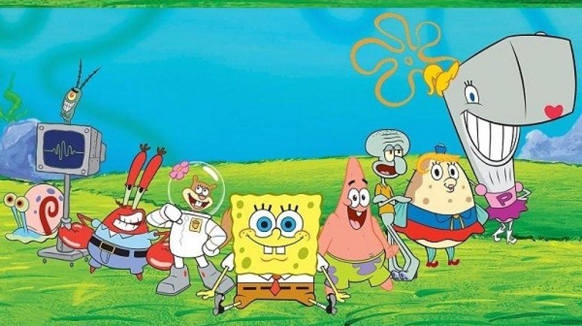

SpongeBob SquarePants(atau yang lebih dikenal sebagai SpongeBob) adalah sebuah serial animasi yang paling terpopuler di Nickelodeon. Pada awalnya serial kartun animasi ini ditayangkan pada tahun 1999 di Amerika Serikat dan diciptakan oleh Stephen Hillenburg, seorang animator dan ahli biologi laut dan diterbitkan oleh perusahaannya, United Plankton Pictures Inc. Di Indonesia, serial kartun animasi ini dipopulerkan oleh Lativi (sekarang tvOne), kemudian hak tayang acara-acara yang diproduksi oleh Nickelodeon dibeli oleh Global TV (sekarang GTV) dan masih ditayangkan hingga saat ini. Kartun ini diciptakan oleh seorang ahli biologi laut dan animator dan lalu dirilis melalui perusahaannya United Plankton Pictures Inc. Serial kartun animasi ini settingnya berada di Samudra Pasifik di kota Bikini Bottom.
